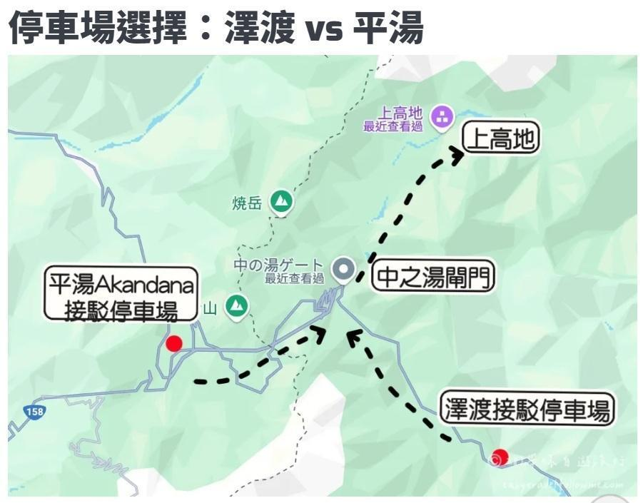

桃園 - 名古屋，去程 14:55-18:45，回程 19:55-22:00。
Quick View
行程重點
名古屋站太閣通口領車；7/26 晚上 20:30 前還車並加滿油。
新穗高需以 KKday QR code 兌換實體票；樂高樂園門票已買。
回程名鐵時間需確認；7/27 樂高樂園附近晚餐待訂。
7/24 Fri.
抵達名古屋
抵達桃園機場一航，吃中餐
JX838 14:55-18:45，桃園到名古屋，都是一航，飛機餐。
購買名鐵 μSKY 特急列車票
名鐵售票處在第一航廈，跟著「電車」指標走，售票處和進站閘門在一起。
可順便確認或購買 7/28 回程票。
飯店附近走走
餓的人可以補吃；便利商店買隔天早餐。可去 MaxValu 太閣店，24 小時，走路約 11 分鐘。
R&B Hotel Nagoyaekimae
Check-in 15:00，Check-out 10:00，無早餐。7/22 付款 2,678。
7/25 Sat.
名古屋取車，高山老街
領車
名古屋站太閣通口領車。
Aji No Yohei 午餐
已訂位。地址：岐阜縣高山市上二之町 7。電話：+81-577-35-1224。
高山老街
- 店家多數 16:00-17:00 關門。
- 下三之町：金乃こって牛，飛驒牛握壽司。
- 上三之町：舩坂酒造店。
- 高山陣屋：從老街步行可到，比櫻山八幡宮近。
- 櫻山八幡宮：從老街步行約 20 分，路平坦好走。
下一個行程可排飛驒大鐘乳石洞，位置在高山老街到飯店中間。
抵達飯店，享受湯屋
飯店晚餐，泡湯聊天、消夜、小酒。
飛驒牛之宿
Trip 訂房。Check-in 15:00，Check-out 10:00。強烈建議在晚餐 18:00 前入住。
有早餐與晚餐。早餐是 set meal，飯店最早 7:30 可送，check-in 時告知早餐幾點送。7/20 付款 9,107。
7/26 Sun.
新穗高纜車，上高地，回名古屋
飯店早餐後出發
拿到早餐直接出發；小孩可在車上吃，大人可到纜車站排隊時吃。
新穗高纜車
8:30 最早班，飯店開車過去約 11 分鐘。停車場：新穗高溫泉停車場，164 台，每次 600 日圓。
KKday 已買票，當天 QR code 到櫃台兌換實體票。惡劣天候導致停駛或暫停營運可全額退款。
新穗高纜車餐廳
上高地
大正池 - 田代池 - 河童橋，往返大約走 1.5 小時，走梓川路線。
- 停車場 1：澤渡停車場，市營第三駐車場（かすみ沢駐車場）。導航：Azumi, Matsumoto, Nagano 390-1514 日本。比較容易滿。
- 停車場 2：平湯停車場，平湯停車場（あかんだな駐車場）。導航：Shiei Akandana parking Lot 或 Akandana Chusha-jo。
- 備用景點：平湯大瀑布，在上高地附近。
開回名古屋
上高地或大鐘乳石開回名古屋站約 3 小時。先 check-in 再還車，20:30 前還車並加滿油。
炭焼牛たん東山 レイヤード久屋大通パーク店
跟阿惟一起吃，23:00 關門。地址：日本〒460-0003 Aichi, Nagoya, Naka Ward, Nishiki, 3 Chome-15-14 先 RAYARD Hisaya-odori-Park ZONE4 2F。
榮與名古屋站商圈
- Oasis21：榮站 4 號出口，23:00 結束營業。
- 久屋大通公園。
- 高島屋百貨：名古屋站最大的購物中心，中央雙塔 B2-11 樓，10:00-20:00。
- 便利商店買隔天早餐。
Mitsui Garden Hotel Nagoya Premier
Trip 訂房。Check-in 15:00，Check-out 11:00，無早餐。7/15 已付款 11,420。
7/27 Mon.
樂高樂園
出門前往樂高樂園
樂高樂園營業 10:00-18:00。搭乘清波線（あおなみ線）：名古屋站 - 金城埠頭站，車程加步行約 50 分鐘。
門票已買：KKday。
優先攻略
- 工廠：可作為第一個起點，影片加實體展示樂高製作流程，結束後會送限定積木。
- 探險：必玩「失落王國探險」與「潛水艇」，兩個在附近。
- 消防學院：體驗消防員救火，大多是爸媽在累。
- 殿堂影院：4D 樂高電影，會震動、吹風和噴水。
- 初級駕駛學校：3-5 歲開車。
- 海岸警衛隊：乘坐樂高船巡邏，可以自己開船。
- 騎士王國：飛龍的徒弟，小孩版雲霄飛車。
- 海盜海岸：必玩 Splash Battle 海盜船射水砲。
彩餐廳
有樂高可以玩，食物評價也比較好。
晚餐未定
阿惟要訂樂園附近餐廳。
逛飯店附近或休息
Mitsui Garden Hotel Nagoya Premier
Trip 訂房，名古屋車站。
7/28 Tues.
名古屋市區與回程
睡飽一點，整理與寄行李
去外面吃早午餐。
名古屋科學館與熱田神宮
熱田神宮搭地鐵，總估計約 40 分鐘。
大須商店街
必吃卡士達鯛魚燒。
出發前往機場
名鐵 μSKY 特急列車時間待確認，先購票。
JX839 名古屋 - 桃園
19:55-22:00，都是一航，飛機餐。
Notes
交通、待辦與攻略
機場 - 名古屋站
- 名鐵特急列車：35 分鐘，980 日圓。中部國際機場直達名古屋車站，05:24-23:31，約每半小時一班，可先在 Klook 買。
- 注意：普通列車沒有開往名古屋站，不要搭錯。
- 名鐵 μSKY 特急列車：28 分鐘，1,430 日圓。可刷西瓜卡或購買 980 日圓一般車票，再加購 450 日圓 μticket 特別車票。
- μSKY 營運時間 7:00-22:00，約每半小時一班，全車對號入座，每節車廂有大型行李架。
新穗高纜車
- 成人來回 3,800 日圓，5 歲以下免費，優先票成人與小孩都要買。
- 新穗高溫泉站 - 鍋平高原站：4 分鐘。步行 3 分鐘到白樺平站。
- 白樺平站 - 西穗高口站：7 分鐘。
- 第 1 纜車每整點、30 分發車；第 2 纜車每整點 15、45 分發車。
- 鍋平高原站可在森林中漫步，全程 1 小時，也有麵包店、輕食、飲料、冰淇淋。
- 最頂站海拔 2,156 公尺，溫度比平地低 6-10 度，要帶外套。
待辦
- 國際駕照
- 旅平險
- 網路
上高地停車場
